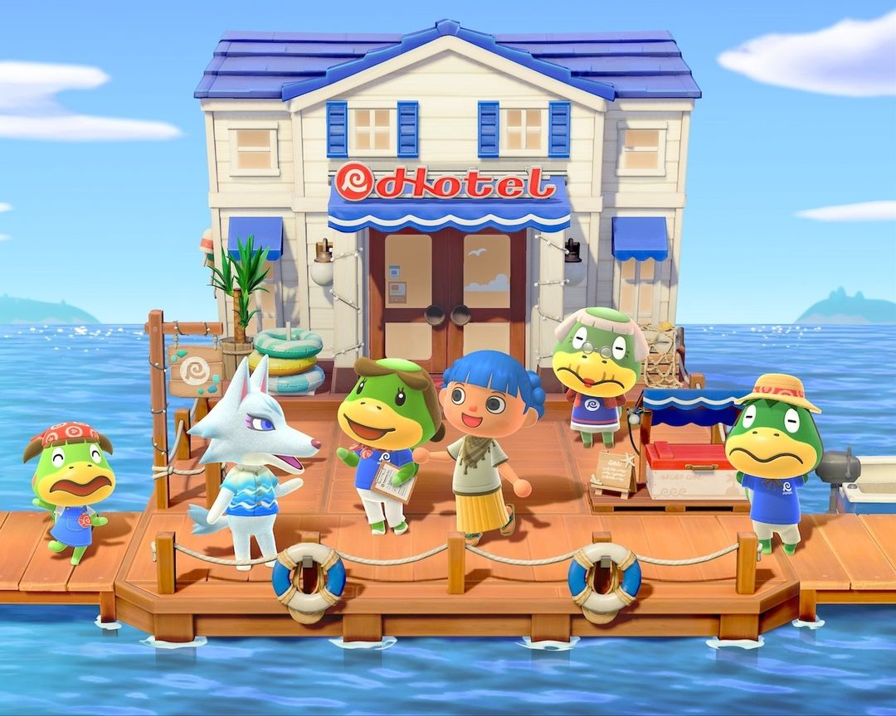
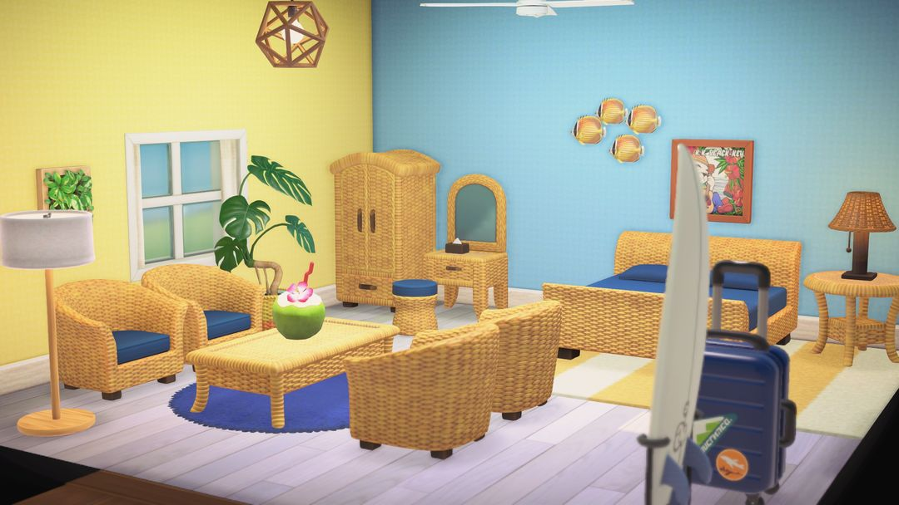
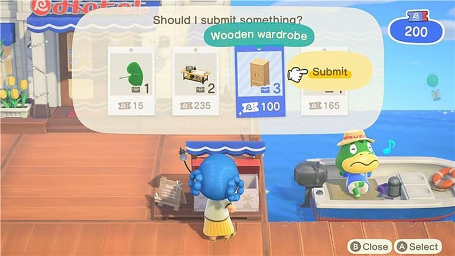
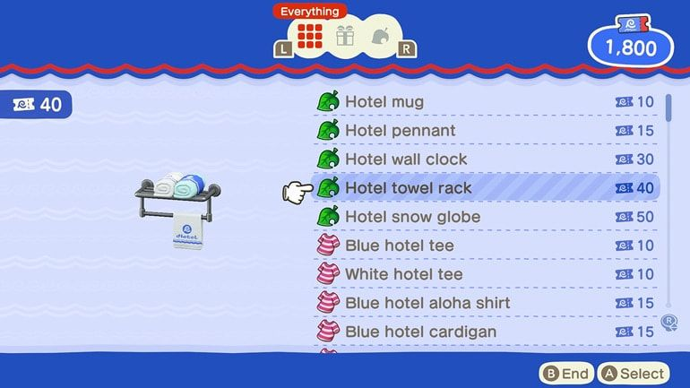

Ver.3.0 ホテル：ホテルチケットの稼ぎ方と使い道
オープン条件、客室コーディネート、ホテルみやげや、VIPルーム
Ver.3.0の無料アップデートで、桟橋のそばにかっぺい一家が営むホテルができました。遊び方は「ハッピーホームパラダイス」によく似ていて、泊まりに来たお客さんの部屋をコーディネートしてホテルチケットをもらい、そのチケットでホテルみやげやにしかない家具や服を選ぶ、という流れです。
ホテルチケットが使えるのはこのホテルみやげやだけで、ベルは使えません。つまり1日にどれだけチケットを稼げるかで、欲しいものが手に入るスピードがほぼ決まります。いちばん大事なのはふつうの客室8部屋をできるだけ早くコーディネートし終えること。VIPルームも、2便目の船も、お店の新商品も、すべてこの先にあります。以下、オープン → コーディネート → チケットを稼ぐ → チケットを使う、の順に説明します。

桟橋のホテル。入口にかっぺい一家がそろっています（画像：任天堂）
01オープン条件と、誰に話しかけるか
ホテルが現れるのは、島の評価が★3になっていること、とたけけが島でライブをしたこと、博物館が建っていること、の3つがそろったときです。3つそろうと桟橋が拡張されて、ホテルが登場します。アップデートした時点ですでに条件を満たしていれば、最初から拡張済みの桟橋になっています。
はじめて行くと、たぬきちからフロントで客室コーディネートを手伝うよう頼まれます。最初の1部屋は「海沿いの部屋」で固定、できあがったその日のうちに観光客が泊まりに来ます。そのあとたぬきちに話しかけると、オープン記念のセレモニーを開けます。
ホテルにいるのはかっぺい一家で、それぞれ担当が分かれています。用事ごとの相手は下の表のとおりです。
| キャラクター | いる場所・担当 |
| かっぺい | オーナー。ふだんはホテルの外の船にいる |
| クーコ | フロント。客室コーディネートの受付 |
| ゲコ | ホテルみやげや |
| クク | ロビー。21時を過ぎるといなくなる |
02客室コーディネート
上の階にはふつうの客室が全部で8部屋あります。フロントのクーコから仕事を受けると、1日最大2部屋まで、1部屋につき200ホテルチケットもらえます。毎日2部屋ずつ欠かさずやれば、4日で8部屋すべて終わります。
1部屋目は海沿いの部屋で固定。2部屋目からは、クーコが毎回2つのテーマを出してくれるので、どちらかを選びます。ふつうの客室のテーマは全部で15種類です。
海沿い、和風、モダン、ナチュラル、カントリー、キッズ、ゆめかわ、高層階、ダイナー、ロッジ、和風レトロ、オリエンタル、氷、ゴージャス、アンティーク。

コーディネートした「海沿いの部屋」（画像：任天堂）
できあがったらスマホのカメラで1枚撮っておきましょう。写真はフロアマップに飾られ、そばにデザインした人と泊まっているお客さんの名前が書かれます。「ハッピーホームパラダイス」を持っていて、すでにそちらで解放した機能（しきり壁、照明の調整、部屋の広さの変更など）は、ここでのコーディネートでもそのまま使えます。
コーディネートが終わった部屋には毎日観光客が泊まりに来るので、部屋に入っておしゃべりもできます。8部屋が満室のときは、同じ性格の観光客は1人しか来ません。
03ホテルチケットの稼ぎ方
ホテルみやげやで使えるのはホテルチケットだけで、ベルでは買えません。チケットはこつこつ自分で貯めるしかありません。稼ぎ方は次のとおりです。
| やること | ホテルチケット |
| ふつうの客室をコーディネート（1日最大2部屋） | 200 |
| VIPルームをコーディネート（1日1部屋） | 200 |
| コーディネート済みの客室をやり直す（1日1回） | 200 |
| 島で悩んでいる観光客をホテルへ案内する | 50 |
| その観光客のVIPルームもコーディネートする | 300 |
| DIY回収ボックスの依頼 | 依頼による |
表の下3行は、最初のVIPルームをコーディネートしてから解放されます。ふつうの客室8部屋を終えると新しい部屋の依頼はもうないので、それ以降の毎日の安定収入はVIPルーム、やり直し、回収ボックスの依頼の3つになります。
DIY回収ボックス
桟橋には回収ボックスが置かれていて、いつも4件の依頼が出ています。それぞれ、何を作るか・何個納めるか・チケットが何枚もらえるかがはっきり書いてあります。1件納めると新しい依頼が補充されますが、毎週月曜日にまとめて入れ替わり、納めていない依頼は無効になります。依頼を納めるとチケットのほかにホテルの評判も上がります。あとで出てくるレトロゲーム機の入荷は、この評判しだいです。

DIY回収ボックス：依頼ごとに、納めるもの・個数・もらえるチケット数が書いてあります（英語版の画面）（画像：任天堂）
ヒント自分の家のこうさくだいでDIYすると、収納の素材をそのまま使えて、一度に最大10個まで作れます。依頼は同じものを何個も求められることが多いので、家でまとめて作ってから納めに行けば、行ったり来たりせずにすみます。
04ホテルみやげやで何を買う？
ホテルみやげやの店番はゲコ。買い方は2通りあります。
1つは店頭に並んでいるものを買う方法。棚の商品は毎日2点入れ替わり、カタログより3割安く、チケットを払えばその場で持ち帰れます。
もう1つはカタログで注文する方法。カタログは品ぞろえが全部そろっていますが定価で、届くのは翌日です。
毎日通りがかりにまず棚をのぞいて、欲しいものがあれば安いうちに買い、店頭にないものはカタログで注文する、という使い分けがおすすめです。
だいりせき、わふうモダン、ワイヤーの各シリーズはここでしか買えません。ほかにもホテルのマグカップ、ペナント、スノーグローブ、かべかけどけい、ホテルのロゴ入りのTシャツやアロハ、かさなどがあります。

ホテルみやげやのカタログ：ホテルのマグカップ、ペナント、Tシャツなど。右側が必要なホテルチケットの枚数（英語版の画面）（画像：任天堂）
よく見かけるアイテムのカタログ価格は次のとおりです。大きな家具は数百枚することもあるので、しばらく貯める必要があります。
| アイテム | カタログ価格（ホテルチケット） |
| だいりせきのだんろ | 500 |
| だいりせきのせんめんだい | 450 |
| だいりせきのテーブル | 300 |
| わふうモダンなベッド | 250 |
| ねこのぬいぐるみ | 120 |
| ホテルのマグカップ | 10 |
カタログは最初から全部そろっているわけではありません。4部屋、8部屋をコーディネートし終えたタイミングで、それぞれ新しい商品が追加されます。入荷が1日遅れることもあり、新商品が入るとカタログに赤い点がつきます。
最後に加わるのが任天堂のレトロゲーム機です。ファミリーコンピュータ、ゲームボーイ、スーパーファミコンなどは各500枚、ラブテスターやウルトラハンドといった昔のおもちゃは200枚、Nintendo Switch 2は222枚。これらは最初のVIPルームをコーディネートし、さらにホテルの評判が十分に上がってから入荷します。評判はおもにVIPルームのコーディネートとDIYの依頼で上がるので、早く手に入れたいならこの2つを毎日続けましょう。
05VIPルームとamiiboのお客さん
ふつうの客室8部屋をすべてコーディネートした翌日、VIPルームが解放されます。VIPのテーマは全部で45種類。ふつうの客室の15種類すべてに加え、VIP限定のテーマが30種類あります。
VIPルームは、先にお客さんを1人招待してからコーディネートを始めます。お客さんは1泊だけして翌日チェックアウトし、部屋もリセットされるので、毎日新しく1部屋ずつ、1部屋200ホテルチケットで依頼を受けられます。コーディネート中にLスティックを押すと、お客さんを表示したり隠したりできるので、家具を置くときに視界のじゃまになりません。
最初のVIPルームを終えると増えること
最初のVIPルームが完成すると、ホテルでできることが一気に増えます。
· フロントにamiiboリーダーが置かれ、毎日amiiboを読み込んで島の外からお客さんを1人VIPルームに招けます。
· コーディネート済みのふつうの客室を1日1回やり直せます。テーマは15種類のどれにでも変えられ、テーマなしにすることもできます。
· かっぺいの船に1日もう1便乗れるようになります。2便目は100ホテルチケットです。
· 島に泊まるところがなくて困っている観光客が現れるようになり、ホテルへ案内するとチケットがもらえます。
注意自分の島の住民や、キャンプ中のお客さんは招待できません。たぬきち、しずえ、フータ、まめきち、つぶきち、あさみ、きぬよ、ロドリー、モーリー、リセットさん、かっぺい一家も招待できません。ローランやジャスティンのように島へやって来るキャラクターも、その日ちょうど自分の島にいる場合は招待できないので、別の日に読み込み直しましょう。
06ちょっとしたコツ
まずは8部屋を終わらせる。お店の新商品、VIPルーム、2便目の船はどれもここから解放されます。早く終わるほど、毎日稼げるチケットも増えます。最初の数日は毎日2部屋を欠かさずに。
セール品は毎日チェック、大物はじっくり貯める。棚に並ぶ3割引の商品は毎日変わるので、通りがかったら見ておきましょう。だいりせきのだんろのような500枚の大物は、貯まってからカタログで注文すればOK。届いた色が気に入らなければ、パニーの島でカイゾーにリメイクしてもらえます。
ロビーのマネキンに服を着せる。ホテルで働いた翌日、クーコがロビーにある2体のマネキンを紹介してくれます。服を着せると泊まりに来た観光客がそのコーデをまねして着てくれて、遊びに来た友だちも借りて着られます。着せた服が自分の収納から減ることはないので、安心して選べます。
依頼は月曜日の前に納める。回収ボックスは毎週月曜にまとめて入れ替わります。手持ちで作れる依頼は日曜までに納めて、無駄にしないようにしましょう。
あつ森 サークル · App Store で「あつ森 サークル」を検索